Back to the future
Несколько фактов о фильме «Назад в будущее»
«Семнадцатилетний Марти МакФлай пришел вчера домой пораньше. На 30 лет раньше»
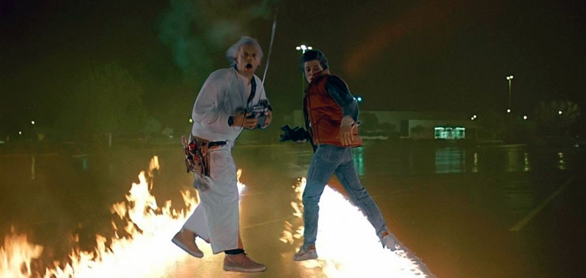3 июля 1985 в США и Канаде состоялась премьера фильма «Назад в будущее». В этой статье вы прочитаете 18 интересных фактов о любимом фильме!
Выпущенный в 1985 году фильм «Назад в будущее» был поставлен Робертом Земекисом по сценарию, написанному им совместно с давним соавтором Бобом Гейлом. Сюжет этой научно-фантастической комедии был закручен вокруг Марти Макфлая, 17-летнего американского подростка, который отправлялся в прошлое на 30 лет назад. Он затрагивал важные темы взросления, первой любви, взаимоотношений отцов и детей и философские аспекты путешествий во времени.
Всё началось со школьного альбома
Концепция фильма родилась у Боба Гейла, когда перебирая старые вещи в подвале родительского дома, он случайно обнаружил школьный альбом своего отца. Боб задумался о том, что было бы, если бы он и его отец знали друг друга, когда им обоим было по 17 лет. Гейл поделился идеей с Земекисом, и вместе они придумали первичную фабулу:
- Старшеклассника отправляют в прошлое
- Там он знакомится со своими родителями
- Его мать из прошлого влюбляется в него
Черновой сценарий сильно отличался от финального
Фильм «Назад в будущее» настолько хорош, что теперь уже сложно представить, в каких муках рождался его сюжет, и что его сценарий неоднократно переписывался практически с нуля. Например…
1. Фамилия Марти изначально была не Макфлай, а Макдермотт.
2. Знаменитой сцены с часами, в которые бьёт молния, в первоначальном сценарии не было. Вместо этого Марти и Док должны были отправиться на… полигон в Неваде, где ядерный взрыв отправил бы DeLorean назад в будущее!
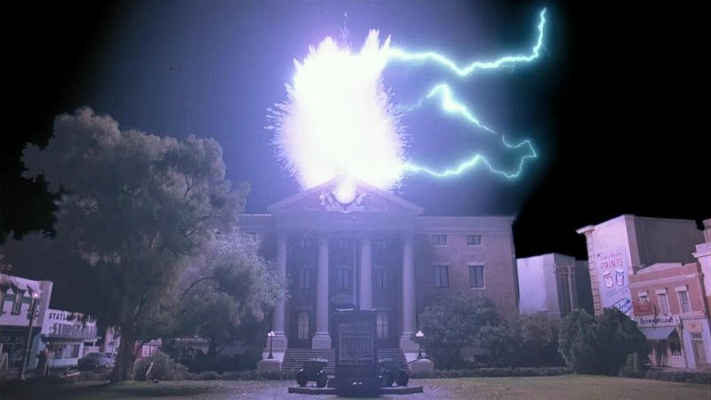3. Привычная нам финальная сцена, в которой Док берёт Марти и Дженнифер в новое путешествие, также не планировалась. Изначально всё заканчивалось тем, что Джордж Макфлай смотрит на газету 1955 года с фотографией Марти, исполняющего на сцене «Джонни Би Гуд» и говорит: «Этого не может быть. Но это…».
4. В ранних набросках сценария у Док Брауна была не собака, а… домашний шимпанзе Шемп! Его заменили на собаку по имени Эйнштейн по просьбе главы Universal - Сида Шейнберга. Шейнгберг сказал Земекису и Гейлу: «Ни один фильм с шимпанзе никогда не приносил денег». Когда же Гейл возразил: «А как насчёт «Победить любой ценой»? Шейнберг ответил: «Так там был орангутанг, а не шимпанзе».
Фильм не назывался «Назад в будущее»
Сейчас это невозможно представить, но фильм мог называться совсем иначе. Сиду Шейнбергу не понравилось название «Назад в будущее», и он отправил Земекису и Гейлу письмо, в котором изложил свои доводы и попросил изменить название на «Космонавт с Плутона» («Spaceman From Pluto»).
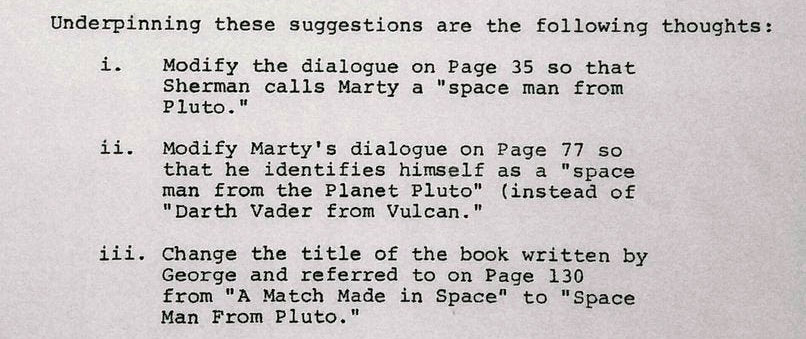К счастью, вмешался продюсер фильма Стивен Спилберг. Он отправил Шейнбергу ответную записку, в которой написал: «Сид, спасибо за вашу шутку. Мы все очень смеялись» («Sid, thanks for your most humorous memo. We all got a big kick out of it»).
Шейнберг ничего не ответил, но, очевидно, не захотел становиться посмешищем и на смене названия больше не настаивал.
Сценарий был отвергнут 44 раза
Одобрив фабулу, предложенную Земекисом и Гейлом, студия Columbia Pictures поручила им написать сценарий. Однако, когда его текст был готов, руководство студии его отвергло. Тогда Земекис и Гейл показали сценарий своему другу, легендарному Стивену Спилбергу. Изучив текст, Спилберг пришёл в восторг: «История очень необычная, но при этом основана на традиционных ценностях: семья, взросление, [подростковые] мечты и разрыв между поколениями. Она действительно потрясающая». Спилберг тут же пожелал, чтобы фильм снимала его продюсерская компания Amblin Entertainment, но Земекис и Гейл не хотели прослыть ребятами, получившими работу только потому, что они дружат с «великим Стивеном Спилбергом». Вместо этого они разослали сценарий буквально каждой студии Голливуда. И… он был отвергнут 44 раза!
К примеру, руководство Columbia назвало его «слишком милым», а в Universal сказали, что: «фильмы о путешествиях во времени никогда не приносят прибыль». Тогда, может быть, «милый» фильм о путешествиях во времени заинтересует студию Уолта Диснея? Ведь на первый взгляд он идеально подходит под её формат? Но в сценарии было несколько сомнительных сцен, в одной из которых мать флиртует со своим сыном, и там назвали сценарий «слишком инцестным».
В начале фильма есть отсылка на его конец
Количество «пасхалок», которыми напичкана вся серия «Назад в будущее», поражает, и первая из них буквально в первых же кадрах фильма!
Как вы помните, он начинается с того, что Марти прибегает в лабораторию Дока, где его не находит. Камера медленно перемещается по комнате, демонстрируя множество часов (аллюзия к теме «времени»), висящих стене. На одних часах мы видим человечка, который буквально висит на стрелках!
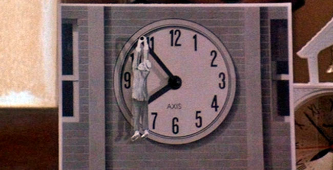Это, так сказать, «двойной удар» - отсылка к немой комедии Гарольда Ллойда «Безопасность прениже всего!» (1923) и одновременно к финальной сцене, где Док точно так же висит на стрелках башенных часов, пытаясь прикрепить к ним оторвавшийся кабель.
Машина времени изначально не была Делорианом
Для автомобиля, на котором Марти и Док путешествуют во времени, был выбран футуристический DeLorean DMC-12. Фильм обессмертил эту модель, сделав её одним из символом 80-х! Однако в ранних черновиках машина времени не была Делорианом. И… даже не была машиной!
Изначально это была «камера времени» - комната, в которую Марти входил и переносился назад в будущее. Затем, силой безудержной фантазии сценаристов, машина времени превратилась в большой… холодильник в стиле 50-х, в который Марти должен был каждый раз забираться. Идея была неплохой, но Спилберг и Земекис отказались от неё, переживая за детей, которые, подражая Марти, станут забираться в холодильники. В то время у многих моделей американских холодильников были ручки-защёлки, не позволявшие открывать холодильник изнутри, из-за чего он мог стать потенциально-смертельной ловушкой.
Только после этого Земекису пришла в голову идея использовать автомобиль, который позволил бы сделать машину времени более мобильной и снять больше динамичных и захватывающих сцены.
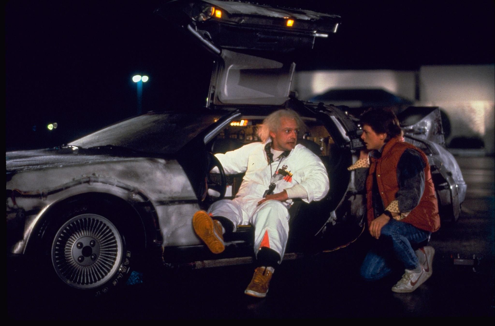Стоит ли говорить, что более футуристичной и крутой тачки чем DeLorean, придумать было нельзя!
Майкл Джей Фокс был не первым, кто сыграл Марти
Конечно, ещё на этапе написания сценария, Земекис думал только о Фоксе. Можно сказать, что сценарий писался «под него». Однако в это самое время Майкл снимался в ситкоме «Семейные узы». И эти узы были очень крепкими, а график съёмок необычайно напряжённым – Майкл работал и репетировал весь день, и на съёмки в кинофильме его не отпустили. Отчаявшись заполучить в фильм актёра своей мечты, Земекис, открыл на эту роль кастинг. Один за другим, перед ним представали «сливки» тогдашней кино-молодёжи, настоящие звёзды подросткового кино 80-х: Джон Кьюсак, Чарли Шин, Ральф Маччио и даже Джонни Депп! Всем им было отказано. Неожиданно, роль получил Эрик Штольц, незадолго до этого снявшийся в великолепной драме Питера Богдановича «Маска». Возможно, роль сыграло некоторое внешнее сходство между Эриком и Майклом.
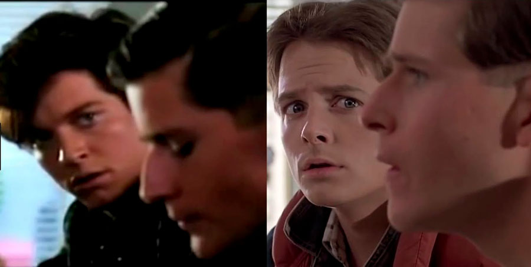Съёмки начались вовремя, однако почти сразу начались проблемы: Эрик Штольц был серьёзным драматическим актёром, который не вписывался в комедийное амплуа своего персонажа. Сцены, в которых, по задумке Земекиса, все должны были смеяться, получались несмешными.
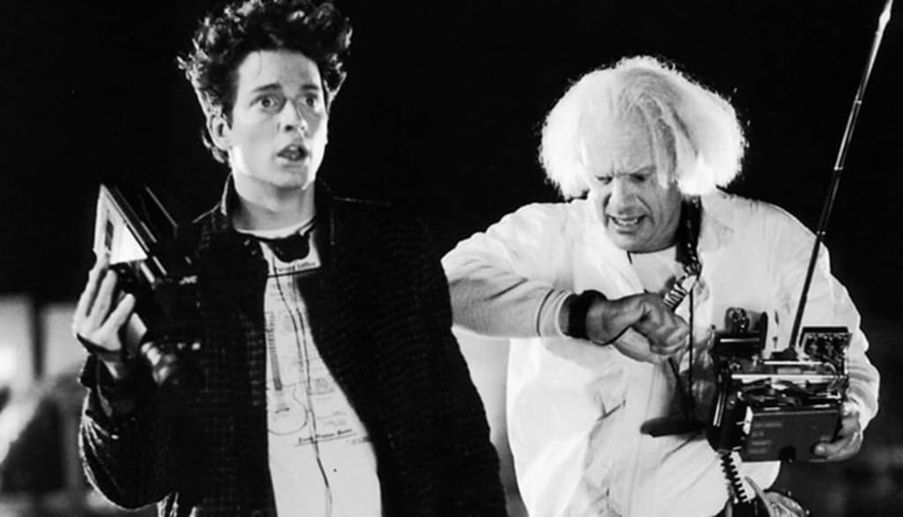Леа Томпсон вспоминает, как на первом прочтении сценария, когда все актёры собрались за одним столом, хохотали и шутили над своими ролями, Эрик Штольц не смеялся. Когда его спросили, что он думает, он ответил: «Все смеются, но это не комедия, а трагедия. Вся моя семья помнит историю совсем не такой, которую я должен делать. И это очень грустно».
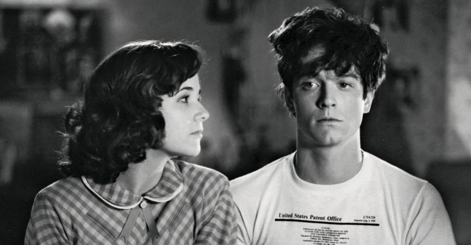Штольц был уволен Земекисом через 6 недель после начала производства. Сам режиссёр тяжело пережил этот момент и с тех пор называет увольнение Штольца «худшим моментом в своей карьере».
Майклу Джей Фоксу приходилось очень много работать
После того как Эрика Штольца отпустили, Земекис предпринял новую отчаянную попытку заполучить Фокса. Он вновь обратился к продюсерам сериала «Семейные узы» с просьбой отпустить Майкла на съёмки. На этот руководство сериала позволило Фоксу прочитать сценарий. Идея Майклу очень понравилась, и он стал умолять соавтора «Семейных уз» Гэри Голдберга позволить ему сниматься. Голдберг уступил, но при условии, что съёмочный график сериала не пострадает. Это означало, что Фоксу придётся сниматься в фильме «Назад в будущее» только во внерабочее время.
В результате, Фокс репетировал и снимался на телевидении с 8 утра до 6 вечера, затем мчался на съемочную площадку «Назад в будущее», где снимался до 3:30 утра. В таком режиме он проработал целых два месяца.
Команда спецэффектов проделала огромную работу
Визуальные эффекты для фильма создавала компания Industrial Light & Magic (ILM). В те времена компьютерные технологии находились ещё в зачаточном состоянии, и почти все спецэффекты – кропотливая работа мастеров монтажа.
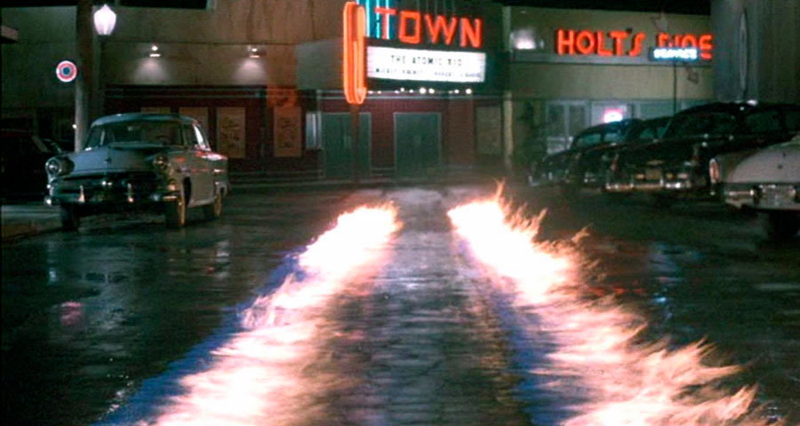К примеру, для того чтобы создать горящие следы от машины времени на асфальте, приходилось поджигать дорожки из бензина. Затем по улице проезжал каскадер, и видеоряд с мчащимся автомобилем накладывался на кадры горящих следов. В свою очередь, молнии и клубы дыма добавлялись компьютерным монтажом.
Оператор-постановщик Дин Канди так прокомментировал свою работу: «в наши дни все спецэффекты создаются на компьютере – никто не допустит, чтобы рядом со звездой и его машиной был открытый огонь. Мой успех измеряется тем, скольких кинозвезд я мог угробить».
Кристофер Ллойд отказался от роли Дока Брауна
Неподражаемого Кристофера Ллойда на роль Доктора Эммета Брауна рекомендовал продюсер Нил Кантон, который год назад работал с Ллойдом в фильме «Приключения Бакару Банзая в восьмом измерении». Ллойду был отправлен сценарий, но как раз тогда он решил, что ему нужно уходить от комедийного имиджа и показать себя в качестве серьёзного актёра. Сценарий полетел в мусорную корзину.
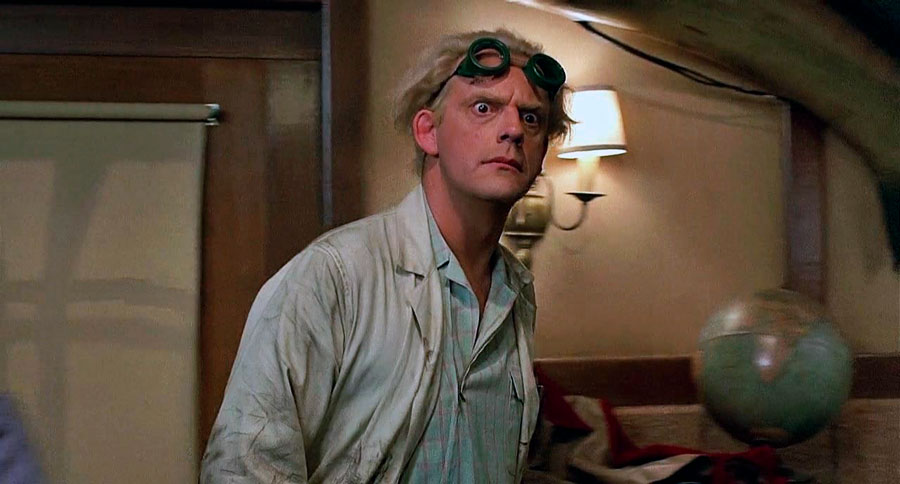Но потом Земекис встретился с ним лично и произвёл на Ллойда очень большое впечатление, сумев донести идеи, которые он закладывал в свой фильм. Ллойд предложил взять за основу своего немного безумного персонажа образы Альберта Эйнштейна и дирижера Леопольда Стокски. Земекису идея понравилась, и Ллойд получил роль.
В эпизоде снимался известный рок-музыкант
Помимо культовой оркестровой музыки, в фильме есть песня «The Power Of Love» рок-группы Huey Lewis And The News. Она возглавила чарты во многих странах мира, а сам Хьюи Льюис получил в картине небольшую роль.
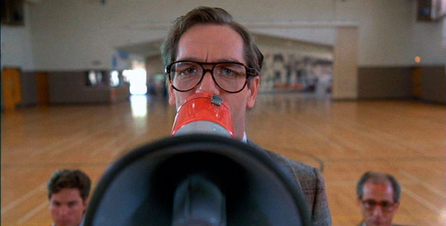Как вы помните, в начале фильма есть сцена, в которой Марти проходит прослушивание для участия в школьном конкурсе «Битва групп» в качестве солиста группы The Pinheads. Льюис получил роль школьного учителя, который резко обрывает группу через мегафон: «Достаточно, ребята. Боюсь, вы слишком громкие» («Hold it, fellas. I'm afraid you're just too darn loud»).
Майклу Дж. Фоксу помогли спеть песню
Ближе к концу фильма, в сцене на школьном балу, где Марти выскакивает на сцену, чтобы исполнить песню Чака Берри «Джонни Би Гуд», требовалось, чтобы Майкл Джей Фокс, до этого никогда не державший в руках гитару, реалистично исполнил рок-н-рольный шлягер. Для того, чтобы выглядеть убедительно, Майкл брал уроки игры на гитаре у музыканта по имени Пол Хэнсон, который похвалил Фокса за трудолюбие и способность быстро учиться.
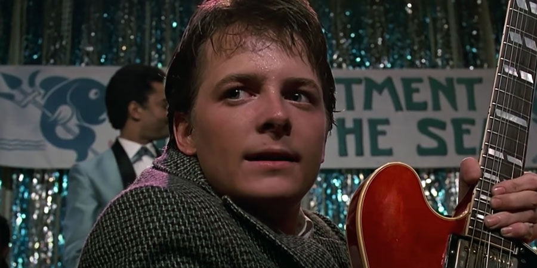Но и вокал Фокса оставлял желать лучшего. Земекису же хотелось, чтобы песня, исполненная лидером школьной группы, звучала профессионально, и в то же время так, чтобы всем казалось, что это поёт сам Марти. Музыкальный руководитель фильма Боунс Хоу объявил кастинг, который выиграл молодой музыкант по имени Марк Чепмен. Увидев объявление о кастинге, он долго тренировался, чтобы его голос звучал как у Фокса, и сегодня мы слышим в фильме песню «Джонни Би Гуд» именно в его исполнении!
Фильм мгновенно стал классикой
В наши дни фильм «Назад в будущее» почитается как один из самых популярных фильмов, когда-либо созданных. Однако свой статус «культового» и «легендарного» он получил почти сразу. После его выхода в прокат в июле 1985-го, Майкл Джей Фокс проснулся настоящей звездой и был номинирован сразу на три премии Оскар («Лучший оригинальный сценарий», «Лучший звук» и «Лучшая оригинальная песня» за «The Power of Love»). Собрав в прокате $389 миллионов, фильм стал самой кассовой картиной 1985-го года!